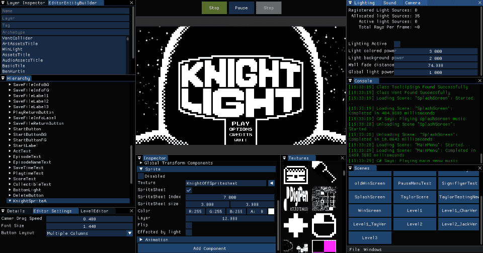

KnightLight
Overview
KnightLight is a tile-based 2D puzzle-platformer in which players navigate a dark environment by illuminating their surroundings. The game was developed as part of the GAM 200-250 course sequence at DigiPen Institute of Technology, a team-based production course focused on building a complete game using a custom C++ engine.
I served as the primary physics programmer on a seven-person team, collaborating closely with designers to implement and iterate on core gameplay systems. My contributions included custom collision handling for interactable objects, hazards, and platform geometry, as well as translating gameplay concepts into technical solutions.
Project Context
KnightLight was built over approximately eight months using a custom C++ engine with a component-based architecture. The engine integrated Dear ImGui for tooling and debugging, and supported workflows through JSON-configured factory instantiation. Levels were created in Tiled and imported directly into the engine.

My Contributions
The renderer uses SFML as a minimal interface for window creation and writing pixel data to the frame buffer. Multiple render modes are provided for debugging and visualization, including a diffuse mode that outputs a basic scanline image, a mode for drawing normals, and a full lighting mode that showcases material types under scene illumination
Antialiasing is implemented using a quasi-random R2 sampling pattern to efficiently distribute rays within each pixel. For each sample, an initial ray origin is generated from the R2 sequence, mapped from pixel space into world coordinates, and cast into the scene. Ray-geometry intersection tests are performed to determine visible surfaces, after which the material associated with the intersected object is evaluated to compute contributions. The resulting color values are accumulated across samples and averaged before being written to the frame buffer.
Acceleration Structure
Initial renders of even simple scenes were slow due to the ray-primitive intersection testing, where each ray was tested against every object in the scene. This approach does not scale and quickly becomes impractical as scene complexity increases. To address this, an acceleration structure was introduced to significantly reduce the number of intersection tests performed per ray.
Materials and Lighting
The renderer supports spherical light sources and three material models: diffuse, specular, and refractive (transmissive). Each material type is demonstrated in the images below to illustrate their respective shading behavior.
Environment Sampling
As a final extension to the project, importance-based environment sampling was implemented to improve convergence in globally illuminated scenes. This approach biases ray directions toward regions of the environment map that contribute higher luminance, allowing significant lighting contributions to be captured earlier in the sampling process.
Final Results
This project significantly strengthened my understanding of the physical principles underlying ray tracing, as well as my proficiency in modern C++ and performance-conscious memory management. The implementation makes extensive use of the C++ standard library, including smart pointers and STL containers, to manage object lifetimes and data structures while maintaining readable and maintainable code.
Potential Improvements
There are several directions in which this project could be extended. The most immediate area for improvement is performance. Significant speedups could be achieved by offloading portions of the rendering pipeline from the CPU to the GPU, particularly for large-scale sampling and intersection workloads.
As scene complexity increases, supporting a large number of light sources would also benefit from additional spatial acceleration. Organizing lights within a dedicated KD-tree or similar structure would allow more efficient light selection and evaluation during shading. Extending the set of supported geometric primitives would further increase scene variety and enable more expressive lighting configurations.
Looking ahead, a natural next step would be the implementation of bidirectional path tracing to further improve convergence in complex lighting scenarios. This would allow the renderer to fully leverage the importance-based environment sampling techniques explored in prior research, including the methods described in the referenced paper below.